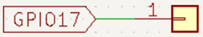
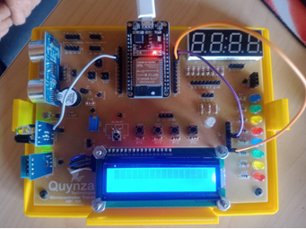

Objetivo. Aprender a utilizar el módulo de sensor IR para evitar obstáculos. Detectar la presencia o ausencia de un objeto mediante señal digital.
Procedimiento.
-
Conectar el módulo IR digital al pin GPIO17 del ESP32.


- Abrir Thonny y crear un nuevo archivo .py.
- Configurar el pin como entrada con resistencia interna de pull-up (Pin.PULL_UP).
-
Ejecutar un bucle que lea el valor lógico del sensor y lo muestre en consola.
import machine import time ir_evitar = machine.Pin(17, machine.Pin.IN, machine.Pin.PULL_UP) # GPIO17 while True: # Muestra valores lógicos para evitar la presencia de un objeto, para evitarlo print(ir_evitar.value()) time.sleep(1)
Actividades sugeridas.
- Acercar un objeto al sensor y medir la distancia a la cual se activa.
- Ajustar la sensibilidad del sensor para que detecte a diferentes distancias.
- Modificar el código para mostrar en la pantalla LCD si hay un obstáculo presente o no.
- Integrar el sensor IR con un LED que se encienda cuando se detecte un objeto.
- Guardar el programa en el microcontrolador y ejecutarlo sin conexión al PC.